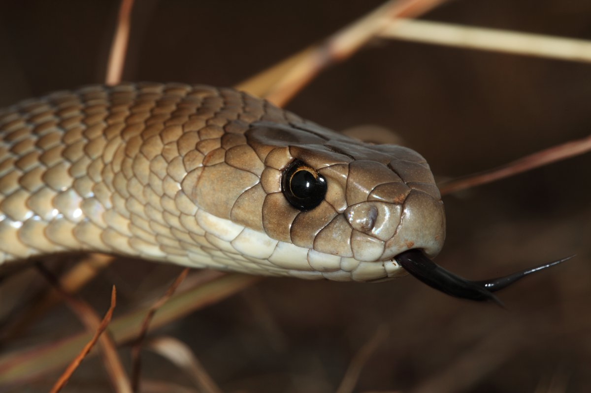

The eastern brown snake (Pseudonaja textilis ), often referred to as the common brown snake, is a species of highly venomous snake in the family Elapidae. The species is native to eastern and central Australia and southern New Guinea. It was first described by André Marie Constant Duméril, Gabriel Bibron, and Auguste Duméril in 1854. The adult eastern brown snake has a slender build and can grow to 2 m (7 ft) in length. The colour of its surface ranges from pale brown to black, while its underside is pale cream-yellow, often with orange or grey splotches. The eastern brown snake is found in most habitats except dense forests, often in farmland and on the outskirts of urban areas, as such places are populated by its main prey, the house mouse. The species is oviparous. The International Union for Conservation of Nature classifies the snake as a least-concern species, though its status in New Guinea is unclear. The Eastern brown snake is a highly venomous snake native to eastern and central Australia and southern New Guinea. They are variable in color. Their upper parts range from pale to dark brown, or sometimes shades of orange or russet. Eastern brown snakes from Merauke have tan to olive upperparts, while those from eastern Papua New Guinea are very dark grey-brown to blackish. The tongue of these snakes is dark, and the irises are blackish with a paler yellow-brown or orange ring around the pupil. Their chin and underparts are cream or pale yellow, sometimes fading to brown or grey-brown towards the tail. Often, orange, brown, or dark grey blotches occur on the underparts. The ventral scales are often edged with dark brown on their posterior edges.
